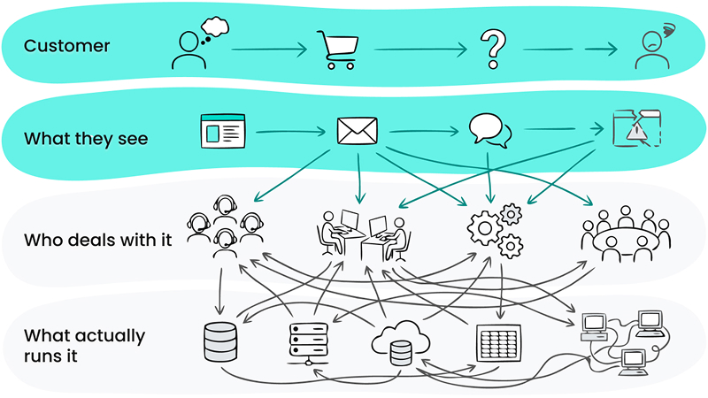

What it is
A two-week audit that traces your real customer experience across digital, physical, and internal touchpoints. You'll see where the experience breaks, what's driving it operationally, and which fixes are actually worth doing.
This is for you if
- Customers are dropping off, but teams disagree on why
- Complaints and reviews point to "something broken," but you can't pinpoint it
- You're planning a redesign, automation, or process change and want to fix the right problems first
- Your experience feels fragmented across marketing, sales, and operations
If your journey is simple and everyone agrees on what the problem is, this probably isn't the right service for you.
What you walk away with
- End-to-end journey map - executive view and operational detail
- Friction points tied to root causes - UX, messaging, and internal process gaps
- Prioritised roadmap - ranked by impact, ease, and feasibility
- 3–5 quick wins - changes you can act on immediately
Why This Pays for Itself
Most customer problems trace back to a small number of journey points and internal bottlenecks. This audit shows where those are, so you don't spend time and money fixing the wrong things or redesigning what isn't actually broken.
Format & investment
- Timeline: ~2 weeks
- Price: from £3,500 (fixed before we start, based on scope)
- Your team’s time: 3–4 hours per key stakeholder
- Start: Book a 30-minute call to see if this sprint fits your situation
Ready to Get Started?
Book a 30-minute call to see if this sprint fits your situation.
Book Your Discovery Call